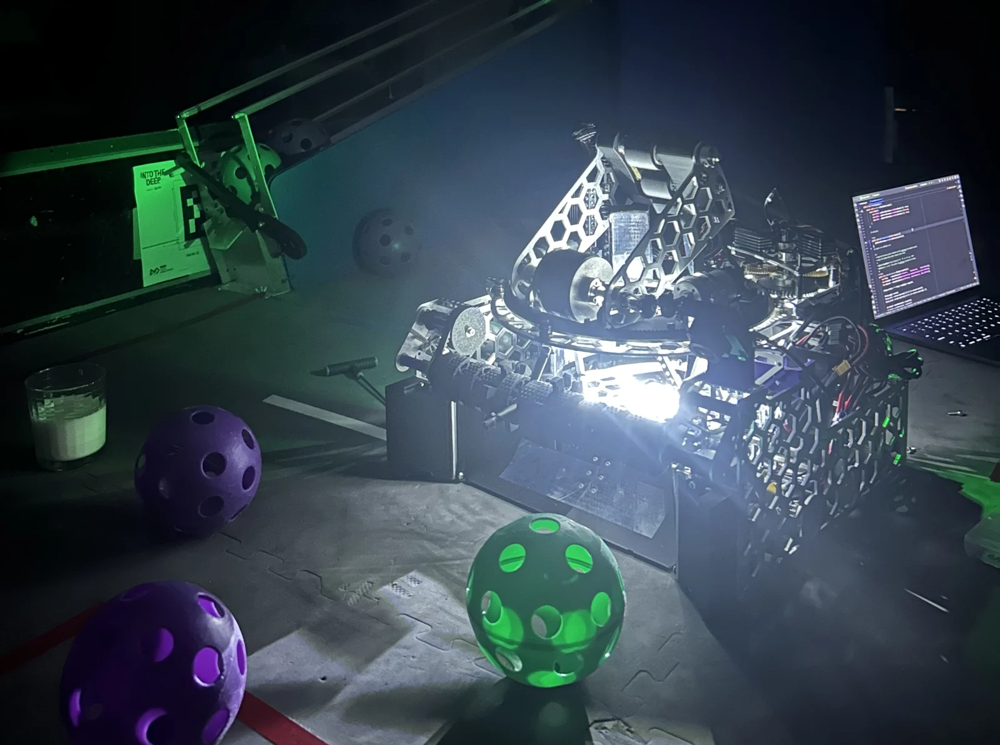

Cupid
FTC Decode Season 2025-2026
3D CAD
Loading CAD…
Drag to orbit · Scroll or pinch to zoom
The 3D model couldn’t load.
- Vision. OpenCV ranks collection zones by artifact-center density.
- Aim. Pinpoint pose tracks the goal. Velocity compensation adjusts turret, hood, and flywheel commands.
- Sort. Color and distance sensors read three slots. Cyclic scoring selects the best motif alignment.
- Feed. A sprung intake loads the ring. Reverse rotation pinches artifacts against a flap and guides them into the shooter.
Horizontal launch velocity · idealized
Spindexer video 0:26
Interactive demos
Illustrative flight model8 m range · 0.8 s flight · no drag
Try the cyclic plannerP = purple · G = green
| Steps | Slots | Matches |
|---|
Annotated assembly
- IntakeFront rollers and sprung linkage
- SpindexerThree-slot ring below the shooter
- TurretGeared rotating platform
- FlywheelAccelerates the artifact
- Adjustable hoodSets launch elevation
- DrivetrainPocketed chassis and torsion box
